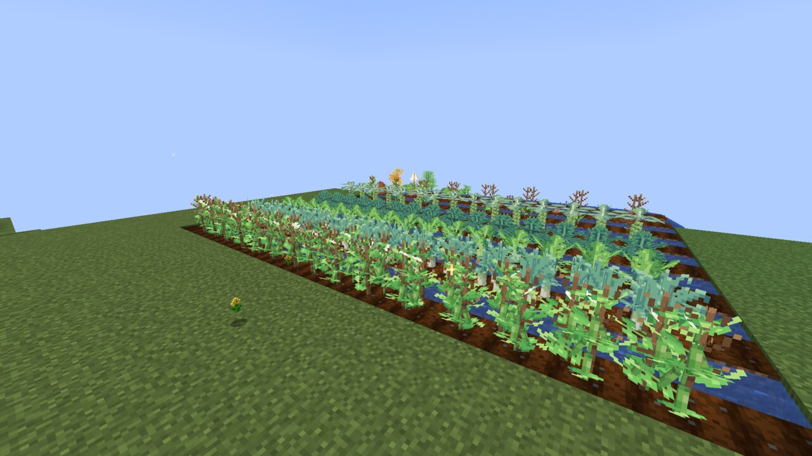
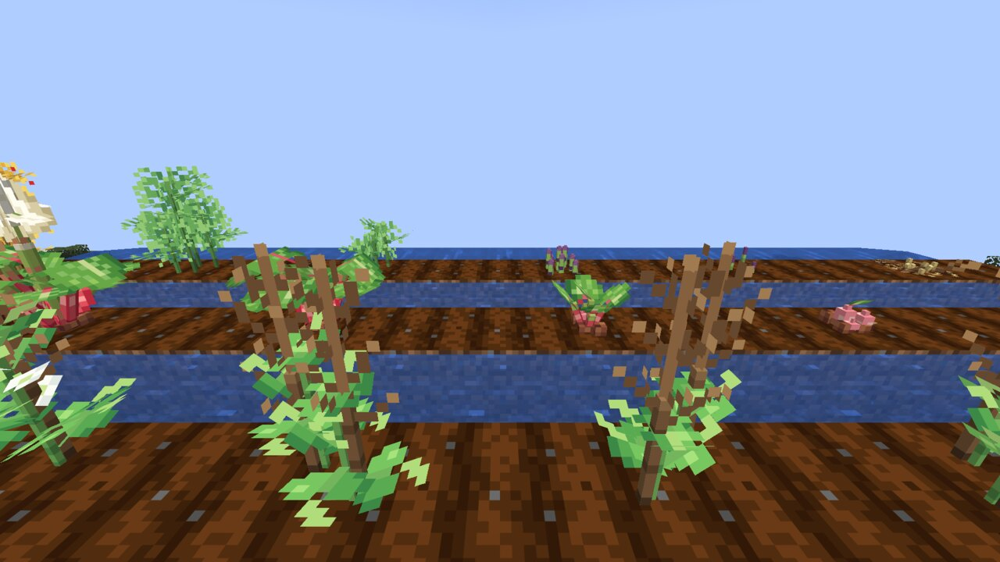
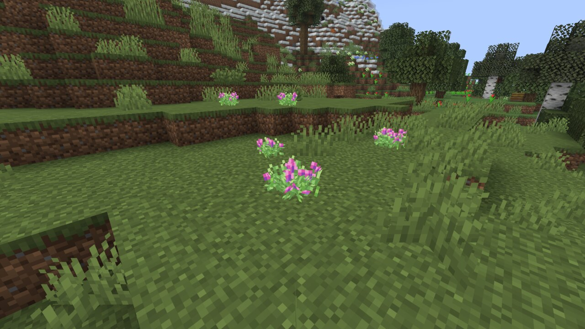
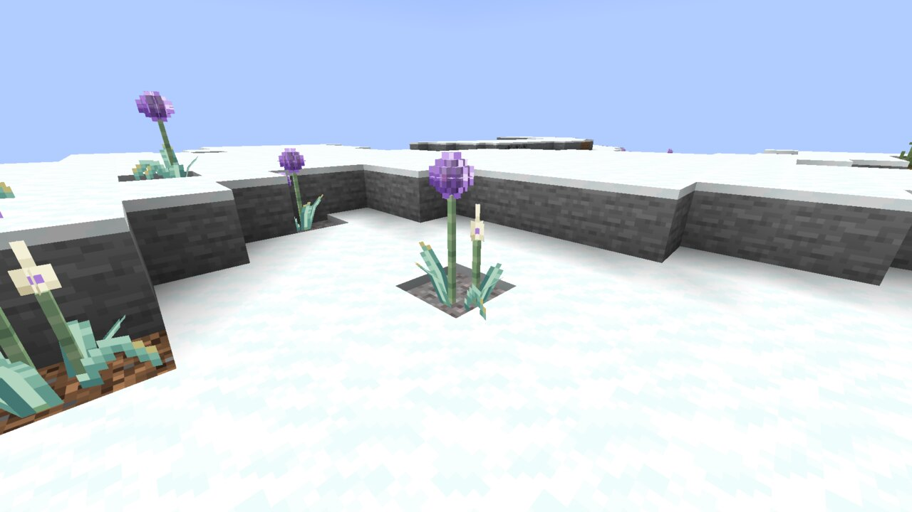
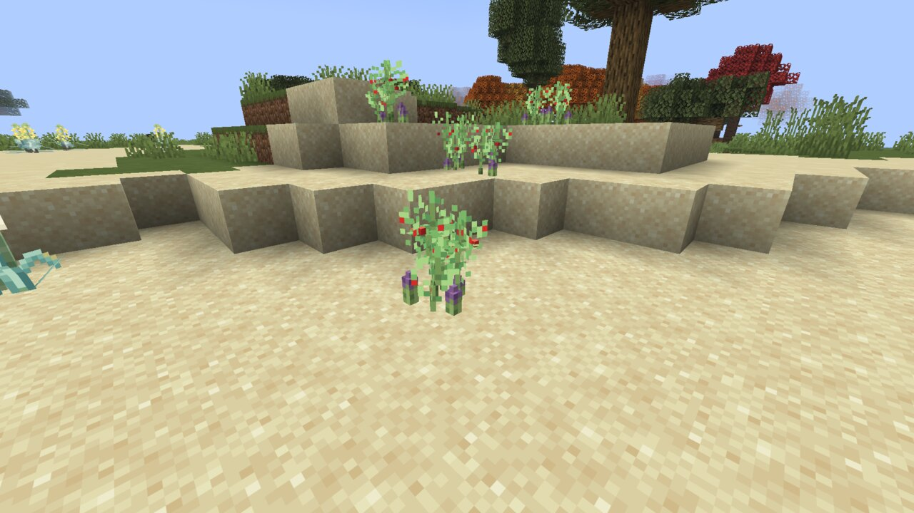
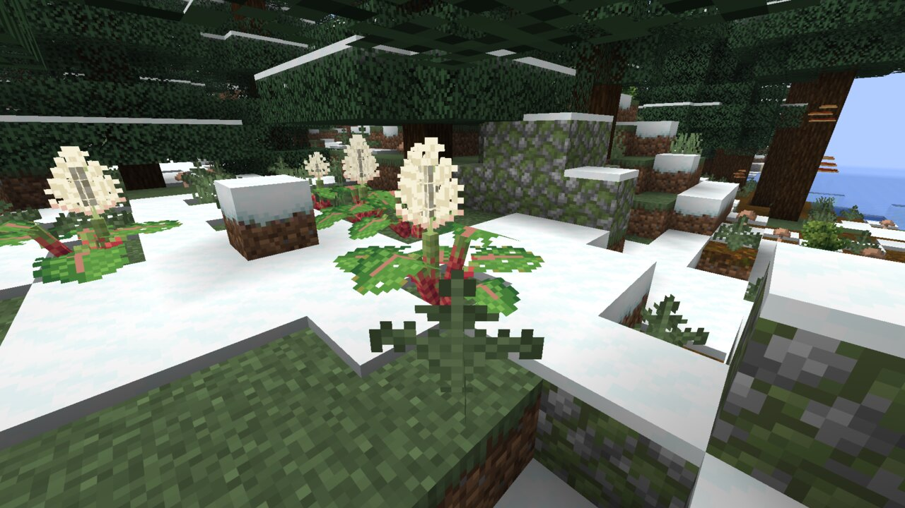
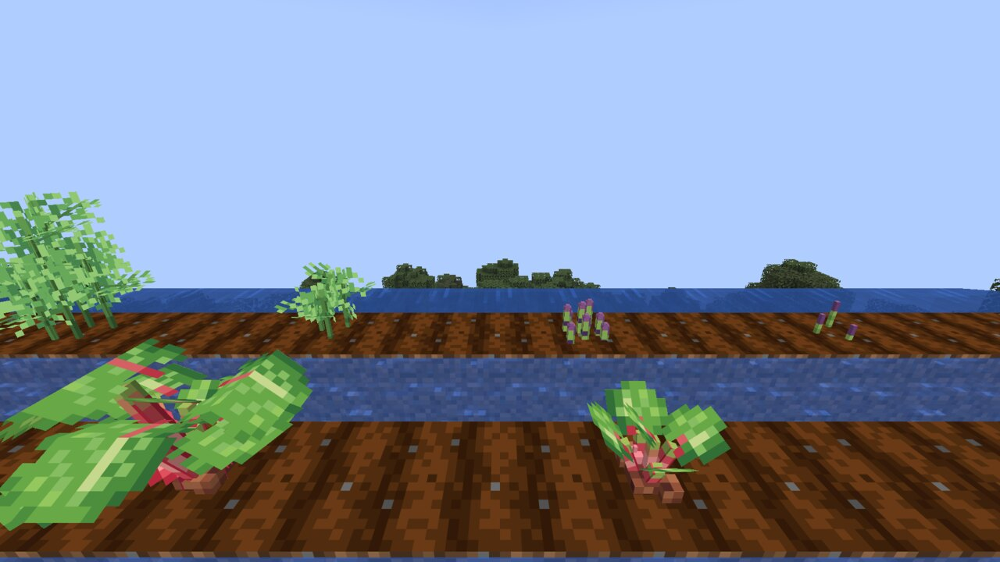

The vegetable patch
Seven more vegetables for the garden, most of them for the cold half of the year: peas that climb, leeks and parsnips that stand through winter, kale and Brussels sprouts you pick again and again, and two perennials planted once and harvested for years: rhubarb and asparagus.


Finding the seed
None of them drops from tall grass. Each has a wild ancestor growing in its own country, in patches of a few plants:
| Wild plant | Where | What it gives |
|---|---|---|
| Wild Peas Wild peas | meadows, plains, flower forests | pea seeds (a low tangle with pink-purple pea flowers) |
| Wild Leek Wild leek | stony shores, beaches, windswept hills | leek seeds (tall purple globe flowers) |
| Wild Parsnip Wild parsnip | meadows, plains, savanna | parsnip seeds; more with shears. Its sap burns bare skin in the sun: use shears, or gather it at dusk |
| Wild Cabbage Wild cabbage | stony shores, beaches, windswept hills | kale or Brussels sprout seed: it's the ancestor of both |
| Wild Rhubarb Wild rhubarb | taiga | a crown if you dig it up with a shovel; otherwise a stalk or two |
| Wild Asparagus Wild asparagus | beaches and river banks | a crown if you dig it up with a shovel; otherwise a spear |




Seeds and produce of the five annual crops carry genes: save and breed them like any other. They all grow on farmland.
When each grows outdoors (see the year round):
| Spring | Summer | Autumn | Winter | |
|---|---|---|---|---|
| Pea Seeds Peas | good | okay | okay | dormant |
| Leek Seeds Leeks | okay | good | good | okay (hardy) |
| Parsnip Seeds Parsnips | good | okay | good | okay (hardy) |
| Kale Seeds Kale | good | okay | good | good (hardy) |
| Brussels Sprout Seeds Brussels sprouts | okay | good | good | good (hardy) |
| Rhubarb Crown Rhubarb | buds, then stalks | stalks; may flower | dies back | sleeps (force it) |
| Asparagus Crown Asparagus | spears to cut | fern | gold fern, red berries | sleeps |
Peas
Sow
Plant pea seeds on farmland in spring.
Stick them
Once they're up, use Pea Sticks pea sticks on the plants (three sticks make three: one in the middle, two above, like a V). They climb the twiggy sticks, flower white, and hang full of fat pods.
Pick
Ripe peas on sticks give two to four pods each (more with Fortune); left to sprawl, one.
Peas, like beans, feed the soil: they leave a bed richer than they found it, so follow them with something hungry.
Leeks and parsnips
Both are frost-hardy: sow them in spring or summer and they stand in the ground through the winter, growing slowly, to be dug when you want them.
Parsnips sweeten after a frost. A grown parsnip that has had a winter's night in the ground (or a cold night anywhere it snows) is dug up as a Frost-sweetened Parsnip, which fills you twice as much.
Kale and Brussels sprouts
The winter greens: both grow best when everything else has stopped, and both are picked and picked again. Use a grown plant to pick it (kale gives one to three bunches, sprouts two to four) and it grows on from where you left it. Break it for a last harvest and seed.
Rhubarb
Plant a Rhubarb Crown rhubarb crown on farmland once and it comes back every year.
| When | What it does |
|---|---|
| Winter | It sleeps: a knobbly crown at the soil. |
| Spring | Fat pink buds break, then crumpled young leaves, then huge leaves on thick crimson stalks. |
| Spring and summer | Use the grown plant to pull two or three stalks; it grows more. Left alone in summer it may send up a tall flower spike: cut it (use the plant) and it goes back to stalks. |
| Autumn | It dies back to the crown. |
Forcing
Make a Rhubarb Forcer rhubarb forcer from five terracotta (a bell: one at the top, two down each side) and set it over a sleeping crown in winter (or one just breaking bud). In the dark under it the crown grows early, whatever the frost. Use the forcer with an empty hand to lift it: if it's had time, there are slender, pale pink stalks with yellow leaves. Pull them for Forced Rhubarb forced rhubarb, tender and sweeter (it chops to more). A forced crown is spent: it rests till next winter, so keep some crowns unforced.
Asparagus
An asparagus bed is a long game. Plant Asparagus Crown asparagus crowns on farmland:
| In spring | |
|---|---|
| The first year | Thin spears come up. They're too young to cut: let them grow into fern and feed the crowns. |
| The second year | Thicker spears: you can take a few, but it soon tires and runs to fern. |
| Every year after | Thick spears in plenty: cut two to four at a time, and keep cutting until it's had enough. |
Through the summer the bed grows into tall, airy fern, golden with red berries in autumn, and dies back to the soil in winter. A bed is a year older each spring that follows a winter.

In the kitchen
| Take | Prepare | For |
|---|---|---|
| Pea Pod | by hand: shell | Shelled Peas ×2 |
| Leek | knife: slice | Sliced Leek ×2 |
| Parsnip | knife: dice | Diced Parsnip ×2 |
| Kale | knife: shred | Shredded Kale ×2 |
| Rhubarb | knife: chop | Chopped Rhubarb ×2 (×3 from forced) |
| Asparagus | frying pan | Buttered Asparagus |
| Brussels Sprouts | frying pan | Pan-fried Sprouts |
| Parsnip | furnace, smoker or campfire | Roasted Parsnips |
In the cooking pot:
| Dish | In the pot | Servings |
|---|---|---|
| Pea Soup | 3 shelled peas, 1 soft onions | 4 |
| Leek and Potato Soup | 2 sliced leek, 1 diced potato | 4 |
| Colcannon | 1 shredded kale, 2 diced potato | 4 |
| Winter Vegetable Stew | diced parsnip, sliced leek, shredded kale, diced potato and sliced carrot, 1 of each | 6 |
And Rhubarb Crumble rhubarb crumble: a bowl, two chopped rhubarb, flour and sugar at a crafting table. Hot soups and stews keep the winter cold off.